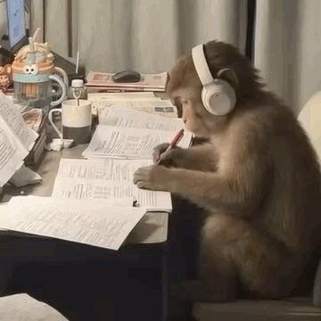
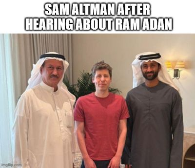
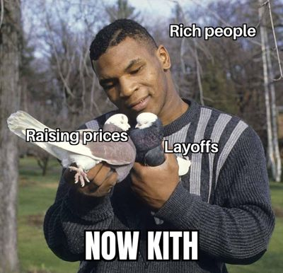
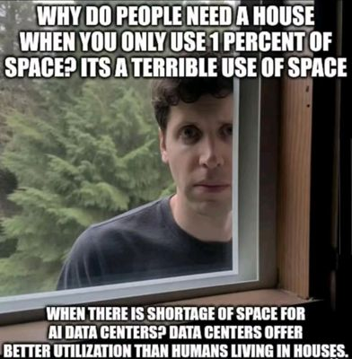
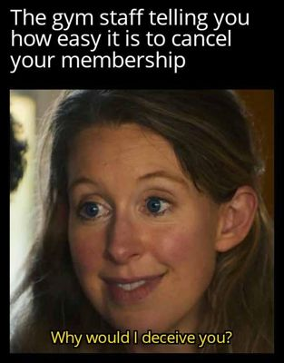
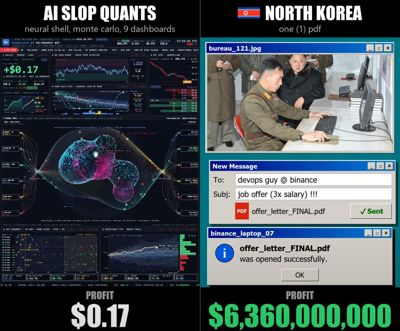

TOP 10 MEMES TODAY
-

1. 'POV: YOUR FIRST TIME IN A FANCY CAFE': SITTING-ON-THE-TABLE SKIT SPAWNS AI REMIXES
Credit: image via Know Your Meme; original creators as documented there. © its owner; shown in small form for ranking and commentary. View originalWhy it ranks: KYM entry published Nov 3, 2026 (~954 page views): original TikTok by @leehoustonx on Nov 1; wave of AI remakes on TikTok/Reels/X. @Flovaai remix 2,343 likes / 260K views (X API, Nov 4 9am). X News story on the cafe seating mix-up. -

2. 'THESIS MONKEY': HEADPHONES PRIMATE GIF BECOMES THE STUDY-SESSION MEME
Credit: posted by @studsyun on X. © its owner; shown in small form for ranking and commentary. View originalWhy it ranks: 164,225 likes / 5.23M views on @studsyun's Nov 3 share of the headphones-monkey GIF (X API, Nov 4 9am). Captioned as frantic studying / 'Thesis Monkey'; X News story still active. -
CNN PROJECTS THAT THE MITOCHONDRIA WILL REMAIN THE POWERHOUSE OF THE CELL
3. BRITANNICA'S ELECTION-NIGHT JOKE: 'CNN PROJECTS MITOCHONDRIA WILL REMAIN THE POWERHOUSE OF THE CELL'
Credit: posted by @Britannica on X. © its owner; shown in small form for ranking and commentary. View originalWhy it ranks: 50,477 likes / 1.01M views on @Britannica's Nov 4 election-night parody (X API, Nov 4 9am). Copycats flooded replies; X News story on the biology-joke wave. -

4. 'RAM ADAN': SAM ALTMAN PHOTO JOKES HE'S INTERESTED AFTER HEARING ABOUT RAM
Credit: posted by u/57evil on r/memes. © its owner; shown in small form for ranking and commentary. View originalWhy it ranks: #1 on r/memes top-today and #8 on top-this-week (Nov 4 9am). Photo of Sam Altman with Gulf hosts captioned as his reaction after hearing about RAM — Ramadan pun on the ongoing AI DRAM joke wave. -

5. RICH PEOPLE 'NOW KITH' RISING PRICES AND LAYOFFS -- MIKE TYSON PIGEON TEMPLATE
Credit: posted by u/MahmoudAO on r/dankmemes. © its owner; shown in small form for ranking and commentary. View originalWhy it ranks: #1 on r/dankmemes top-today and still on top-this-week (Nov 4 9am). Mike Tyson 'Now Kith' pigeon template labeled Raising prices / Layoffs. -

6. ALTMAN-STYLE RANT MEME: HOUSES ARE A 'TERRIBLE USE OF SPACE' vs. AI DATA CENTERS
Credit: posted by u/ManagerOfLove on r/memes. © its owner; shown in small form for ranking and commentary. View originalWhy it ranks: #2 on r/memes top-today and #11 on top-this-week (Nov 4 9am). Sam Altman-at-the-window macro arguing houses waste space that data centers could use — satire of DRAM/AI-infra logic. -

7. GYM STAFF ON CANCELING YOUR MEMBERSHIP: ELIZABETH HOLMES 'WHY WOULD I DECEIVE YOU?'
Credit: posted by u/Renatop569 on r/dankmemes. © its owner; shown in small form for ranking and commentary. View originalWhy it ranks: #2 on r/dankmemes top-today (Nov 4 9am). Elizabeth Holmes interview still captioned about how 'easy' gym cancellations are. -
8. SENDING A MEME TO SOMEONE IN THE SAME ROOM: MARGE'S SIDE-EYE WAIT
Credit: posted by u/I_killed_the_kraken on r/memes. © its owner; shown in small form for ranking and commentary. View originalWhy it ranks: #3 on r/memes top-today (Nov 4 9am). Marge Simpson side-eye reaction for waiting while someone next to you reads the meme you just sent. -

9. 'AI SLOP QUANTS' vs. A ONE-PDF PHISH: $0.17 vs. BILLIONS JOKE
Credit: posted by u/Round-Good1179 on r/dankmemes. © its owner; shown in small form for ranking and commentary. View originalWhy it ranks: #3 on r/dankmemes top-today (Nov 4 9am). Split meme: complex AI-trading dashboards make $0.17; a simple phishing PDF joke is labeled with a massive profit figure. -

10. BILLIONAIRES LAUGHING WHEN BLAME LANDS ON IMMIGRANTS, THE POOR, OR TRANS PEOPLE
Credit: posted by u/donkeyheaded on r/dankmemes. © its owner; shown in small form for ranking and commentary. View originalWhy it ranks: #5 on r/dankmemes top-this-week (Nov 4 9am). Collage of laughing billionaires with the caption about redirected blame.